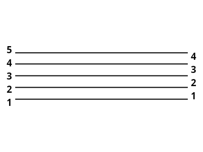
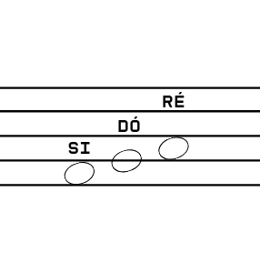
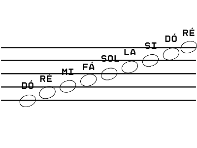
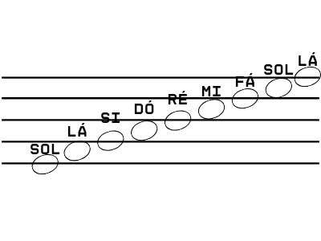

Aula 02: Claves e Linhas Suplementares
Versão em pdf com exercícios.
Você já sabe que cada linha e espaço da pauta tem um nota, mas como saber qual a nota que está representada? É aqui que entram as claves, elas nos dão uma nota de refência para que assim as outras sejam encontradas, e nós temos três claves, e duas delas podem ser representadas de formas diferentes.

A claves que talvez seja a mais conhecida é a Clave de Sol. Ela indica que toda nota na segunda linha(contada de baixo para cima) é um sol. A partir dessa nota eu consigo encontrar todas as outras.
As outras claves funcionam também da mesma forma, mas indicam as notas Fá e Dó. Essas duas claves tem mais uma coisa de diferente, note que elas tem dois pontinhos do lá direito. Esses pontinhos servem para deixar evidente qual a linha que está sendo indicada como referência., isso porque a clave de fá pode ser usada tanto na quarta(Sua forma mais comum) ou na terceira linha.
Já a clave de dó tem ainda mais possibilidades, podendo ser representada na primeira, segunda, terceira ou quarta linha.
Mas, se as notas são infinitas, como representar tudo em cinco linhas? E aqui te apresento as linhas suplementares, que são esses peuqenos pedacinhos de linha que funcionam exatamente como uma continuação da pauta
Firme o que aprendeu com os exercícios do material. Bons estudos.